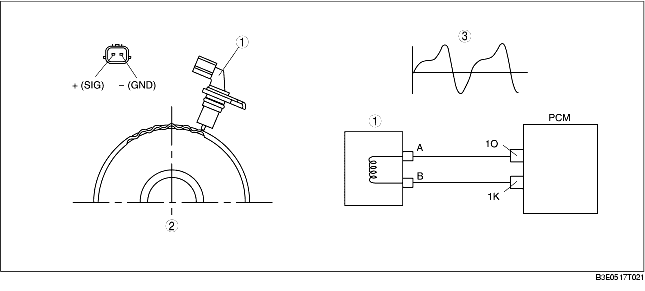

• The input/turbine speed sensor is a magnetic pickup type. A 32-pulse signal is generated per rotation of the forward clutch drum, and input to the PCM.
• The PCM detects the shift start and end timing according to the signal from the input/turbine speed sensor, and performs detailed control, improving shift quality.

.